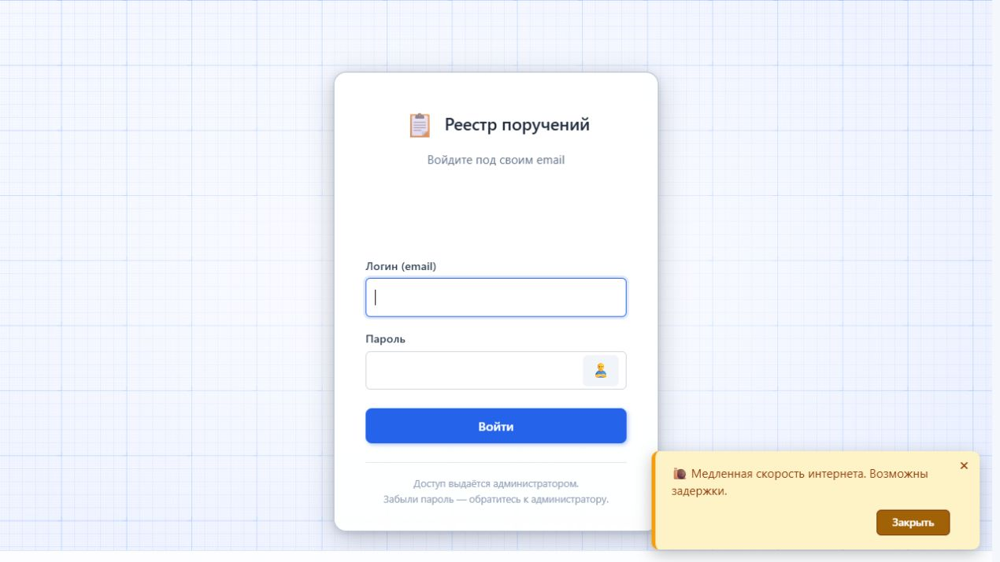
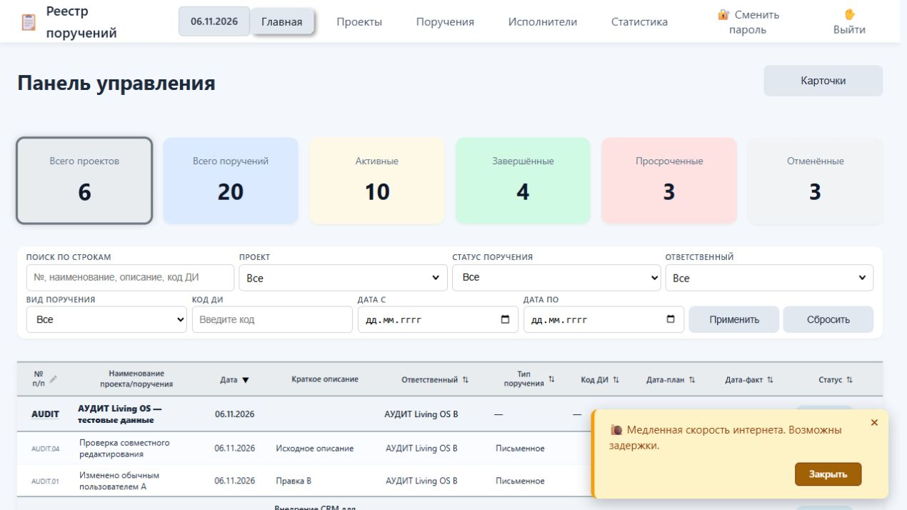
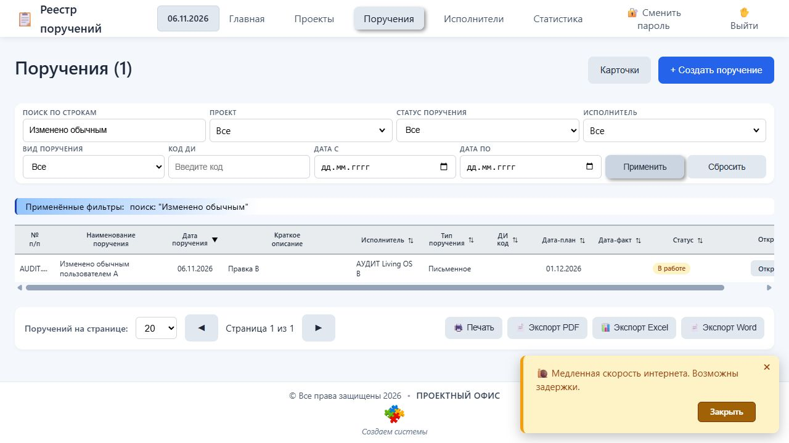
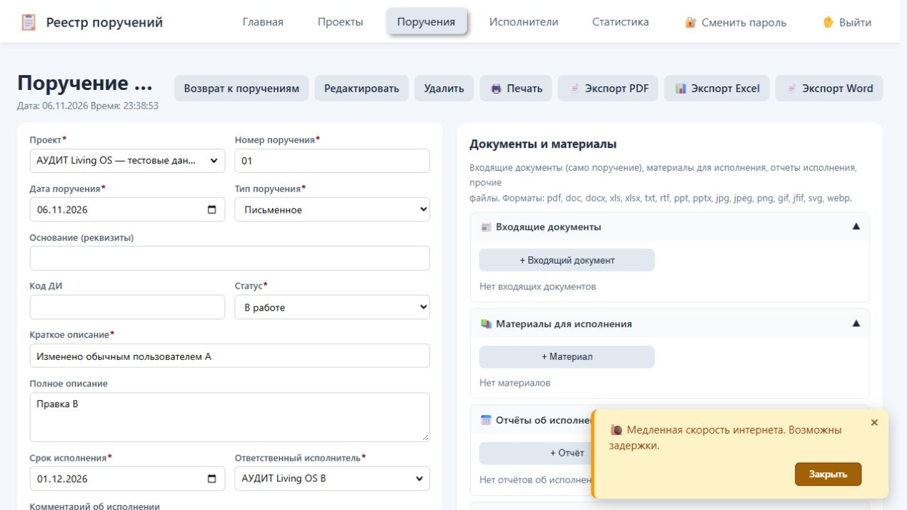
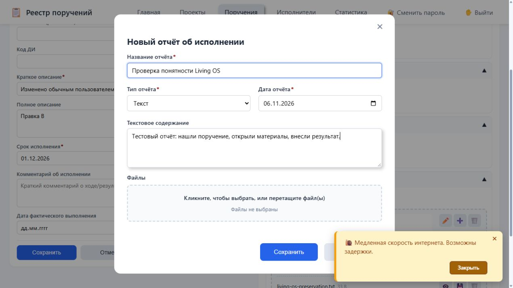
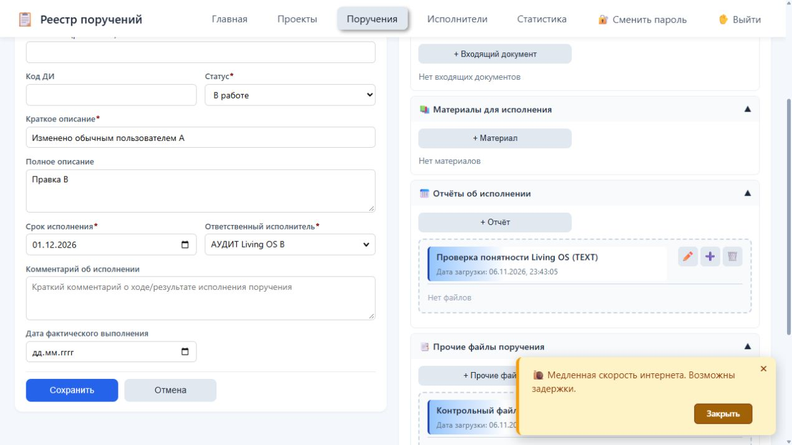
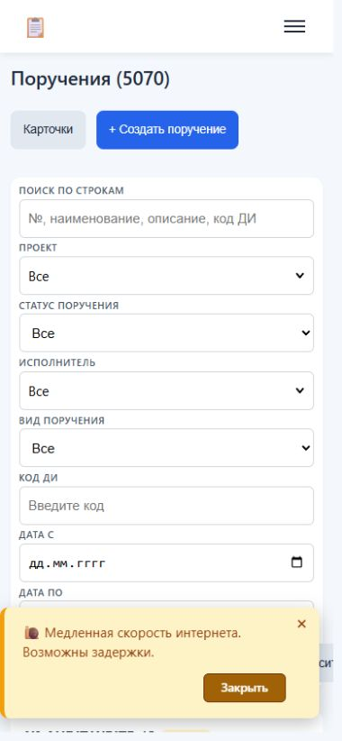
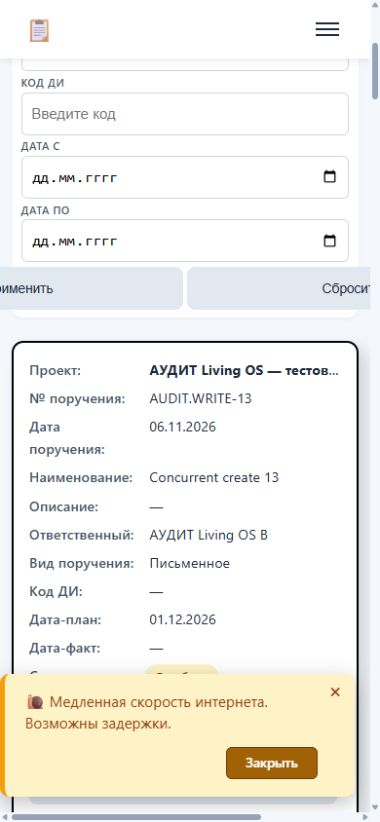

00 / Главное для решения
Основа для развития есть.
До рабочих данных нужны исправления.
Рабочую основу можно сохранить и развивать как модуль Living OS. Доказательств необходимости переписать всё с нуля нет. Текущую сборку рано выпускать с рабочими данными: обнаружены воспроизводимые ошибки управления доступом, целостности файлов и совместного редактирования.
Источник: orders. Переданный проект Дмитрия Коваленко. Объект оценки — реализация и её готовность к согласованным сценариям, а не профессиональные или личные качества автора.
Как устроена текущая система
Таблицы, карточки, формы.
API, права и обработка файлов.
Схема по проверенному коду. Для восстановления нужны и база, и файлы. Почтовые уведомления используют SMTP; в испытаниях отправка отключена.
Содержание отчёта
01 / АрхитектураЧто представляет собой проект
| Часть | Как устроена | Практическое значение |
|---|---|---|
| Интерфейс | Статические HTML/CSS и JavaScript; таблицы, карточки, фильтры, формы, статистика, предпросмотр и экспорт. | Работает в браузере. Отдельная установка каждому сотруднику не нужна. |
| Сервер | Java 21, Spring Boot 3.2.5. Контроллеры → сервисы → репозитории → база. | Одно приложение с разделением по слоям. Для такого масштаба монолит допустим; отдельные микросервисы пока не обоснованы. |
| Данные | PostgreSQL, JPA, миграции Flyway; девять бизнес-таблиц и служебная история миграций. | Связи и часть ограничений закреплены в базе, структуру можно развивать миграциями. |
| Файлы | Байты в отдельной папке uploads; связи, пути, автор загрузки и метаданные — в PostgreSQL. | Для переноса и восстановления нужны обе части. |
| Уведомления | SMTP, фоновые задания, внутренние события создания проекта и поручения. | Есть точки расширения. Надёжная доставка сообщений и повторная обработка не доказаны. |
Сильные стороны: предметная модель уже работает; есть поиск, пагинация, связанные документы и отчёты; использованы стандартные технологии; предусмотрены BCrypt, CSRF, внешние ключи и уникальные ограничения, ограничения размера файла и страницы. Проект удалось собрать и запустить без изменения исходников.
Что устарело или затрудняет развитие: Spring Boot 3.2.5 относится к ветке, открытая поддержка которой завершилась с 3.2.12 в ноябре 2024 года — это подтверждает официальное сообщение Spring. Требуется обновление с проверкой совместимости. Сам Java 21 или отсутствие frontend-фреймворка не являются признаком непригодности.
Авторские JavaScript-файлы местами содержат 1,5–2 тысячи непустых строк; формы, экспорт, подсказки и обработка файлов требуют аккуратного разделения и проверок. В src/test тестов не обнаружено; сборка сообщила об отсутствии тестов. В pom нет обычной настройки упаковки исполняемого Spring Boot JAR: для демонстрации использована явная команда repackage. Переданный комплект не содержит полноценной инструкции эксплуатации, развёртывания и восстановления.
Миграция V2 с демонстрационными данными находится среди обычных миграций приложения. Перед производственным развёртыванием её нужно отделить от рабочего сценария. Нельзя переносить тестовые справочники и статусы в рабочую базу как реальные сведения.
02 / Риски и защитаЧто мешает безопасной эксплуатации
В техническом отчёте зафиксировано 11 замечаний: 6 высокой и 5 средней серьёзности. Четыре серверных сценария воспроизведены на синтетических данных. Остальные подтверждены трассировкой исходного кода; вредоносные документы в браузере не исполнялись, действительность внешних секретов не проверялась.
| № | Проблема и направление исправления | Оценка и доказательство | Источник |
|---|---|---|---|
| 1 | Встроенные пароли используются как рабочие значения по умолчанию Удалить секретные значения по умолчанию, заменить их обязательными внешними настройками или безопасной генерацией начального пароля. Заменить раскрытые пароли у владельцев сервисов и у экземпляров, инициализированных с такими настройками. Не выводить старые значения в отчёты. | Средняя Подтверждено по коду | AdminUserInitializer.java:74 |
| 2 | Обычный пользователь может менять логин и блокировать чужие учётные записи Разделить справочные поля и управление учётной записью. Изменение логина, активности и удаление записи с доступом защитить административной проверкой на сервере; самостоятельную смену логина реализовать отдельно с повторной аутентификацией. | Средняя Воспроизведено на копии | ExecutorServiceImpl.java:96 |
| 3 | Понижение роли, блокировка и отзыв пароля не отзывают существующие сессии Отзывать все сессии затронутой учётной записи при изменении роли, активности и пароля либо проверять версию доступа/статус пользователя на каждом запросе. Привязать сессии к неизменяемому user id, а не изменяемому email. | Высокая Воспроизведено на копии | ExecutorServiceImpl.java:196 |
| 4 | Имя загружаемого файла позволяет перезаписать существующее вложение Создавать физическое имя только из серверного UUID и проверенного расширения, а исходное имя хранить исключительно как метаданные. Отклонять разделители путей и управляющие символы. Создавать файл без замены существующего и гарантировать уникальность физического пути. | Высокая Воспроизведено на копии | AttachmentServiceImpl.java:173 |
| 5 | Произвольный диапазон статистики создаёт миллионы объектов в памяти Ограничить допустимые годы и максимальное число месяцев до выполнения SQL и построения результата. Возвращать 400 для чрезмерных диапазонов или агрегировать их по годам. Ограничить размер кэшируемых результатов. | Средняя Подтверждено по коду | StatisticsServiceImpl.java:144 |
| 6 | SQL-ошибка раскрывает хеш пароля чужой учётной записи Возвращать стабильное безопасное сообщение о нарушении ограничения без SQL, внутренних исключений и значений строк. Подробности оставлять в защищённых журналах с фильтрацией секретов. Дополнительно запретить неадминистративное изменение login-полей и валидировать обязательный email для аккаунтов. | Высокая Воспроизведено на копии | ExecutorServiceImpl.java:96 |
| 7 | Предпросмотр XLSX допускает выполнение HTML из ячейки Выводить значения ячеек через textContent и разрешённые свойства либо очищать весь сформированный HTML и проверять схемы ссылок перед вставкой. Обновить или заменить встроенный конвертер. Одного отключения cellHTML недостаточно: остаётся необработанное значение data-v. | Высокая Подтверждено по коду | xlsx-js-style.min.js:2 |
| 8 | Предпросмотр DOCX запускает HTML без изоляции Отключить renderAltChunks. Если HTML-фрагменты нужны, очищать их и показывать в изолированном iframe без выполнения скриптов и доступа к основному приложению. Изолировать предпросмотр документов и ограничить допустимые схемы ссылок. | Высокая Подтверждено по коду | docx-preview.min.js:7 |
| 9 | Генератор шрифта PDF компилирует непроверенные аргументы Временно установить isEvalSupported:false в getDocument и заменить оба встроенных файла PDF.js поддерживаемой исправленной версией. После проверки совместимости убрать unsafe-eval и изолировать предпросмотр. | Средняя Подтверждено по коду | pdf.js:6190 |
| 10 | Подсказка карточки проекта исполняет HTML из полей исполнителя Экранировать каждое поле исполнителя при построении подсказки либо создавать её через textContent. Использовать одинаковый безопасный способ в таблице и карточках. | Высокая Подтверждено по коду | projects.js:726 |
| 11 | Ссылка в DOCX не проверяет допустимую схему адреса Разрешать только согласованные безопасные схемы ссылок, блокировать javascript: и активные URL; изолировать просмотрщик. | Средняя Подтверждено по коду | docx-preview.min.js:7 |
Права на проекты сейчас широкие для всех вошедших пользователей. Это само по себе ещё не доказывает ошибку относительно исходного замысла общего реестра, но не реализует требуемое разделение «смотреть / добавлять документы / редактировать / удалять». Ошибка управления чужими учётными записями установлена отдельно: обычный пользователь изменил логин и заблокировал тестового администратора.
После блокировки новый вход администратора отклонялся, но уже открытая сессия сохраняла административные действия; то же подтверждено после понижения роли. Запрет на самостоятельное повышение роли сработал, однако вернул HTTP 500 вместо корректного ответа об отсутствии прав. Запрос без CSRF-токена получил 403.
Защита от ошибок: дубликат номера поручения отклонён с 409, отсутствие исполнителя и завершение без фактической даты — с 400. При этом срок раньше даты поручения принят сервером с 201. Две сессии прочитали одну карточку: обе последовательно сохранились с 200, а изменение первой потерялось. Нужны контроль версии записи и понятное разрешение конфликта. Это проверка устаревшей версии, а не доказательство всех возможных гонок.
Полной истории «кто, когда, что изменил, старое и новое значение, причина» в проверенных путях нет. uploadedBy относится к загрузке файла, notification_log — к уведомлениям. Корзины и пользовательского восстановления удаления не обнаружено: тестовое удаление убрало и метаданные, и файл.
03 / НагрузкаРост с 5 до 50 пользователей
Короткий эксперимент выполнен на этом компьютере: отдельная база, исходный JAR, 512 МБ максимальной Java-кучи, пул БД до 10 соединений; 5 020 поручений, 6 проектов, 59 учётных записей. В каждой фазе участвовали отдельные вошедшие аккаунты. Запросы шли без пауз на размышление.
| Одновременных аккаунтов | Запросов чтения | Ошибок | Медиана | 95% ответов быстрее | Максимум |
|---|---|---|---|---|---|
| 5 | 100 | 0 | 12 мс | 253 мс | 397 мс |
| 50 | 1 000 | 0 | 197 мс | 914 мс | 1 908 мс |
Проверялись списки поручений и проектов, панель проектов, статистика и карточка. Самый медленный из выбранных маршрутов при 50 аккаунтах — панель проектов: p95 около 1,29 секунды. Дополнительные 50 одновременных созданий разных поручений завершились без ошибок; в базе появились все 50 записей, p95 около 132 мс.
Границы эксперимента: 100 запросов заняли 1,33 секунды, 1 000 — 6,12 секунды; это короткие прогоны с прогретыми маршрутами. Здесь нет сети будущего офиса, браузерной отрисовки, массовых крупных файлов, отправки почты и длительной работы. Нельзя выводить из этого максимальное число пользователей или обещание доступности сервиса. Нужен длительный тест на выбранном сервере с реальными размерами документов и рабочими сценариями.
Ограничения текущей реализации: 20 МБ на файл, 100 МБ на multipart-запрос, максимум 200 записей в странице, экспорт поручений ограничен 10 000. Экспорт и часть списков/агрегатов требуют отдельной оценки на растущем объёме. Локальные файлы, локальные сессии и кэш нужно учитывать, если появится второй экземпляр приложения.
04 / Данные и восстановлениеНакопление, архивирование и восстановление
Материалы связаны с проектами и поручениями через входящие документы, материалы исполнения, отчёты и прочие файлы. Это полезная основа контекста. Сейчас отсутствуют подтверждённые версии документов, поиск дублей по содержимому и полноценная история происхождения. Статус ARCHIVED у проекта не означает отдельное неизменяемое архивное хранилище.
В переданном комплекте не найдены настроенные автоматические резервные копии, расписание проверки восстановления и копия вне сервера. dump_command.txt собирает тексты исходников, а не резервирует PostgreSQL. Отсутствие этих механизмов в проекте не доказывает, что их нельзя обеспечить средствами будущего сервера.
Практическая проверка восстановления: испытательная копия была остановлена, затем сохранены pg_dump и папка файлов; они восстановлены в другую базу и другую папку. Совпали количества: 6 проектов, 5 070 поручений, 59 исполнителей, 8 записей вложений и 4 отчёта. Два фактически присутствовавших файла совпали по SHA-256; новое контрольное вложение скачалось из восстановленного приложения с HTTP 200 и правильной контрольной суммой.
Демонстрационная миграция содержит записи вложений без переданных реальных файлов; такие отсутствовавшие байты резервная копия не создаёт. Проверка проведена на новом контрольном вложении. Это ручное локальное восстановление, не установленный сервис резервирования, не внешняя копия и не доказательство сохранности при отказе диска.
Для Living OS нужны: согласованный допустимый объём потери данных и срок восстановления; регулярные согласованные копии БД и файлов; внешнее хранилище копий; проверочное восстановление; правила версий, удаления, архивирования и сроков хранения. При работающем приложении простое независимое копирование двух частей может дать несогласованный результат. Транзакции PostgreSQL не откатывают операции с файлами автоматически. Подходы к резервированию базы описаны в документации PostgreSQL.
05 / Интерфейс и мобильностьПонятность и естественный ход работы
Проверенный путь: вход → общий обзор → поиск → карточка → ввод отчёта → сохранение → мобильный список и карточки. Это экспертная проверка одного сценария на локальной копии. Она не измеряет скорость освоения незнакомым пользователем.
1. Вход — работает, есть понятный путь восстановления доступа
Полей мало, подписи есть, указан администратор для выдачи доступа. Значок показа пароля выглядит как человек, а не привычный глаз. На локальном стенде появляется предупреждение о скорости интернета; оно не объясняет, какое действие действительно не выполнено.

2. Обзор — полезен руководителю, слабее направляет новичка
Есть сводные числа и статусы. Не выделен очевидный первый шаг «мои поручения / что требует моего внимания». Фильтры и общая таблица занимают основную площадь. Снимок сделан до загрузки 5 000 синтетических поручений; показанные числа не являются данными реальной команды.

3. Поиск — работает, результат и фильтры понятны
Нужное поручение найдено; показаны количество и применённые фильтры. Таблица широкая даже на настольном экране: действие «Открыть» у правого края, часть текста обрезана. Нужен компактный основной набор колонок с раскрытием подробностей.

4. Карточка — всё рядом, но чтение и редактирование смешаны
Поручение и документы доступны рядом. Заголовок обрезается многоточием; одновременно присутствуют «Редактировать», поля и «Сохранить», что затрудняет понимание текущего режима. Набор экспортов соперничает с основными рабочими действиями. Термины «ДИ» и четыре категории материалов требуют понятных пояснений.

5. Ввод отчёта — сценарий доступен и завершается
Есть обязательные поля, выбор даты и текст. Выбор «типа отчёта» прежде содержания и Word по умолчанию требуют знания внутренней классификации. В данном сценарии сохранён текстовый отчёт; загрузка файла проверялась отдельно через API, а не через системное окно выбора.

6. Сохранение — подтверждение есть, результат можно показать лучше
Появились сообщение «Отчёт сохранён» и запись отчёта. Однако на карточке видны техническое TEXT и «Нет файлов», а введённый текст сразу не показан. Это может создавать ощущение неполного результата. Кнопки-эмодзи требуют текстовых названий; названия для вспомогательных технологий нужно проверить отдельно.

7. Мобильный экран — базовая адаптация есть, рабочий путь затруднён
При настройке 390×844 фактическая ширина документа 529 px, доступная ширина 380 px: есть горизонтальное переполнение всей страницы. Меню сворачивается, поля перестраиваются, но фильтры занимают почти весь первый экран. Предупреждение перекрывает кнопки и содержимое.

8. Мобильные карточки — читаются лучше, общие помехи сохраняются
Подписи полей помогают чтению, но длинные названия сокращаются. Переполнение 529/380 сохраняется и в режиме карточек. Уведомление снова занимает нижнюю часть экрана. Требуются компактные сворачиваемые фильтры и доступные основные действия.

Доступность: у проверенных полей фильтра связаны подписи, есть текстовые статусы и видимое выделение фокуса. Визуально мелкие подписи, плотные таблицы, кнопки-эмодзи и перекрывающее уведомление требуют проверки. Полного измерения контраста, обхода клавиатурой и скринридером не было; соответствие WCAG не заявляется. Ориентир для следующей проверки — WCAG 2.2.
Для критерия «как танго» полезен короткий тест с новыми пользователями: без инструкции найти своё поручение, понять следующий шаг, приложить материал, отчитаться и исправить ошибку. Записывать успешность, время, ошибки и обращения за помощью. Внешняя современность не заменяет этот результат.
06 / Интеграции и помощникИнтеграции и сквозной помощник Living OS
Есть HTTP JSON API и внутренние события создания проектов/поручений. Готовых подключений к мессенджерам, MCP-сервера, сквозной аналитики поведения и библиотеки проверенного командного опыта в просмотренной реализации не установлено. SMTP реализован, но доставка в данном аудите отключена и не тестировалась.
Для Telegram возможен отдельный адаптер к официальному Bot API. Для учётных систем, календарей и других продуктов совместимость зависит от их конкретных API, доступов и объектов обмена. Сейчас серверная авторизация рассчитана на браузерную сессию и CSRF. Для внешних клиентов нужны отдельные учётные данные и ограниченные разрешения, стабильный контракт API, повторная обработка без дублей и наблюдение за сбоями.
Внутренние Spring-события не являются надёжной внешней очередью. Для важных уведомлений нужно хранить задание на отправку, различать постановку в очередь, попытку и доставку, предусмотреть повтор и журнал ошибки. Нынешняя асинхронная отправка и запись успеха не доказывают получения письма.
| Возможность Living OS | Основа, которую следует добавить | Критерий проверки |
|---|---|---|
| Помощь человеку в текущей задаче | Контекст поручения, поиск материалов с учётом прав, объяснение следующего шага, ссылки на источники. | Ответ можно проверить; помощник не видит больше данных, чем разрешено пользователю. |
| Распространение командного опыта | События «действие — контекст — результат», предложение практики, проверка пользы, область применимости, авторство и версия. | Полезность оценивается по результату и обратной связи, а не по числу кликов или частоте приёма. Предложение не превращается автоматически в обязательное правило. |
| Надёжные действия помощника | Ограниченные инструменты, серверные проверки полномочий, журнал действий, контроль версии, восстановление. | Ошибка модели не даёт административных прав и не обходит подтверждение критичной операции. Текст вложения не становится командой для системы. |
| Поддержка благополучия команды | Проверяемая нагрузка, конфликт сроков, запрос помощи, добровольная самооценка; отдельный процесс профессиональной оценки. | Нельзя выдавать клики, задержки и стиль работы за диагноз или оценку интеллекта. Вывод объясним и оспорим; доступ к личным сведениям определён. |
| Living Files | Стабильные идентификаторы материалов, версии, связи с задачами и событиями, происхождение, экспорт и восстановление. | Материал сохраняет историю и связи при переходе между компонентами экосистемы. |
MCP обеспечивает стандарт подключения инструментов и контекста к ИИ-клиенту. Он не создаёт сам по себе память, обучение или беспристрастность. Рекомендуемая последовательность развития: сначала данные и права, затем помощник с чтением и подсказками, после проверки — ограниченные действия и обмен подтверждёнными практиками. Поддержку психического здоровья следует строить с участием человека и специалиста; ориентир — рекомендации ВОЗ.
07 / Приоритеты доработокПорядок доработок
| Этап | Результат | Условие готовности |
|---|---|---|
| 1. До рабочих данных | Закрыть управление чужими аккаунтами, отзыв сессий, утечку SQL-ошибок, подмену вложений и опасный предпросмотр; убрать встроенные секреты, заменить действующие раскрытые значения, обновить зависимости. | Регрессионные проверки подтверждают устранение каждого пути; настройка запуска не возвращает небезопасные значения по умолчанию. |
| 2. Управляемый пилот | Матрица прав по проектам и операциям; история изменений; контроль одновременного редактирования; корзина/восстановление; резервирование; журналы и диагностика; понятный мобильный путь. | Разные роли проходят положительные и отрицательные сценарии; восстановление выполнено из внешней копии; согласованы ожидаемая нагрузка и допустимые время ответа/простой. |
| 3. Экосистема | Контракт API, события, надёжная доставка и первый выбранный адаптер. | Повтор события не создаёт дубликат; сбой доступен для разбора; изменение прав распространяется на интеграции. |
| 4. Помощник и опыт | Контекстная помощь, поиск, предложения практик и обратная связь. | Оцениваются точность, полезность, права доступа и исправимость ошибок; люди сохраняют контроль. |
Это приоритеты аудита, не выполненные исправления и не оценка стоимости. Объём работ и сроки разумно уточнять по первым двум этапам вместе с разработчиком. Решение о полной переработке следует принимать после оценки стоимости устранения конкретных ограничений, а не по возрасту внешнего вида.
08 / ДоказательстваЧто именно проверено и где доказательства
- Сборка и первоначальный запуск копии без изменения исходников; базовые страницы и семь API-маршрутов проверены ранее в этой задаче.
- Независимое чтение серверной защиты и разбор архитектуры; отдельная проверка путей обработки документов и HTML; родительская проверка выводов. Охват полного чтения файлов частичный, не каждую строку всех библиотек.
- Изолированные проверки прав, сессий, ошибочного ответа, файлов, конфликтующих сохранений и валидации. Результаты сценариев; проверка раскрытия ошибки.
- Протокол нагрузки и протокол восстановления.
- Полный технический архив Codex Security, модель границ безопасности, подробный охват и структурированные замечания сохранены локально. Сводные выводы и ограничения включены в этот отчёт; служебные материалы отдельно не публикуются.
- Сверка исходников: 165 файлов оригинала и копии совпадают с исходным манифестом. Итоговое состояние стендов: исходная демонстрация 18080 работает, временные приложения 18081 и 18082 остановлены. Данные и копии испытаний сохранены отдельно.
Не проверено: реальный сервер, HTTPS и прокси, доступ извне, эксплуатационные секреты и доставка почты, длительная нагрузка и большие пакеты документов, внешнее резервирование, физические телефоны, все экспорты, полный аудит доступности и работа новичков. Не проводились психологические оценки людей или сбор их поведения.
Техническая метрика средства проверки
Codex Security завершил проверку fd3f4ce7-1e55-4a69-acbd-d6474d0fc344 и сформировал отчёт. Охват чтения исходников отмечен как partial. Средство сообщило totalTokens 20 031 228, из них cachedInputTokens 19 417 088, для четырёх чатов/агентов по данным codex_rollout. Эта агрегированная метрика не является стоимостью или чистым расходом именно текущего этапа; отдельная денежная стоимость не рассчитывалась.
Опубликовано в Research Library 7 ноября 2026 года. Содержательные выводы, приоритеты и восемь скриншотов сохранены. Ссылки на исходники обозначают файлы и строки локального проекта; протоколы испытаний размещены рядом с отчётом. Показатели состояния стендов относятся к моменту аудита.